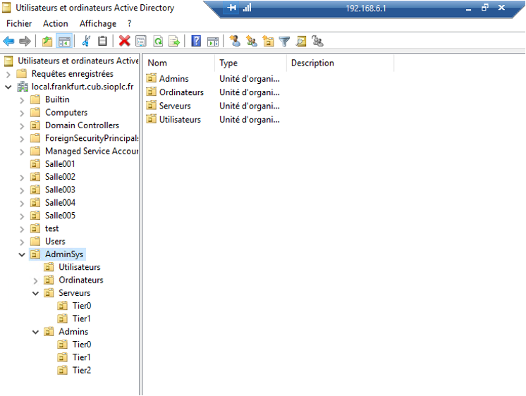

Stratégie de groupe (GPO)

Prérequis

Ducumentation en ligne : https://cubdocumentation.sioplc.fr
Adressage
| Puissance de 2 | Valeur |
|---|---|
| 2⁰ | 1 |
| 2¹ | 2 |
| 2² | 4 |
| 2³ | 8 |
| 2⁴ | 16 |
| 2⁵ | 32 |
| 2⁶ | 64 |
| 2⁷ | 128 |
Adresse réseau : 192.168.6.0/24
| Service | Nombre d’hôtes | Adresse réseau | Masque de sous-réseau | Adresse de diffusion | Description VLAN |
|---|---|---|---|---|---|
| Production | 120 | 192.168.6.0 | 255.255.255.128 | 192.168.6.127 | VLAN 56 |
| Client 1 | 32 | 192.168.6.128 | 255.255.255.192 | 192.168.6.191 | VLAN 10 |
| Administration systèmes et réseaux | 6 | 192.168.6.192 | 255.255.255.240 | 192.168.6.207 | VLAN 20 |
N°1 sous-réseau Production = 126 hôtes → 2⁷ → /25
Production = 192.168.6.0/24 → 255.255.255.128 → x.x.x.1000 0000
Diffusion : 1100 0000 . 1010 1000 . 0000 0110 . 0111 1111
➡️ 192.168.6.127
Schéma logique – Agence Frankfur

Packet tracert - Agence Frankfurt

Plan de câblage

Réponse aux questions
Question 1 : Pourquoi l'authentification par login et mot de passe est problématique pour se connecter avec un compte "Administrateur du domaine" ?
L'authentification par simple identifiant et mot de passe est insuffisante pour un compte Administrateur du domaine, car un mot de passe peut facilement être compromis, notamment par phishing ou fuite d'informations dans l'Active Directory. Si cela se produit, l'attaquant obtient immédiatement un contrôle total sur l'ensemble du domaine. De plus, cette méthode ne permet pas de vérifier de manière fiable l'identité de l'utilisateur, contrairement à des mécanismes basés sur des certificats. C'est donc la méthode la plus vulnérable pour un compte aussi sensible.
Question 2 : Définition d'une authentification multifacteur
L'authentification multifacteur consiste à vérifier l'identité d'un utilisateur en exigeant au moins deux catégories de preuves distinctes parmi :
- Ce qu'il sait : mot de passe, code PIN
- Ce qu'il possède : smartphone, token, carte à puce
- Ce qu'il est : empreinte digitale, reconnaissance faciale, données biométriques
Question 3 : Quelles sont les fonctions du code PIN et du code PUK ?
Le code PIN permet d'accéder normalement à une carte SIM ou à une carte à puce. En revanche, le code PUK intervient uniquement lorsque le PIN a été bloqué après plusieurs tentatives incorrectes : il sert alors à le réinitialiser et à débloquer la carte.
Question 4 : Pourquoi est-il obligatoire de les modifier avant de mettre en œuvre la nouvelle authentification ?
Il est indispensable de modifier ces codes avant d'activer la nouvelle authentification afin d'éviter que la clé ne soit bloquée pendant la configuration ou lors de son premier usage. Cela garantit une mise en place propre et sécurisée.
Question 5 : Démontrer en quoi l'authentification TOTP est jugée moins robuste que l'authentification par certificat X509 stocké sur une clé ?
L'authentification TOTP est moins robuste car :
- Le secret peut être copié, cloné ou volé (application sur smartphone compromise, extraction du secret, phishing du code).
- Elle ne prouve pas la possession d'un matériel unique et sécurisé.
L'authentification par certificat X.509 est plus robuste car :
- La clé privée est stockée dans un support matériel sécurisé et non extractible.
- Elle nécessite la présence physique du support et l'utilisation d'un PIN.
- Elle est impossible à copier et beaucoup plus résistante aux attaques par phishing.
Résumé : Le TOTP est moins robuste car son secret peut être copié, volé ou phishé. Le certificat X.509, lui, repose sur une clé privée stockée dans un support matériel sécurisé, non copiable et protégée par un PIN. Cela le rend bien plus fiable.
I — Mise en place de la solution technique
Paramétrage de l'AD
Mise en place de l'arborescence suivante :
|-----AdminSys (Unité d'organisation)
|-----Utilisateurs (Unité d'organisation)
|-----Ordinateurs (Unité d'organisation)
|-----Tier0 (Unité d'organisation)
|-----Tier2 (Unité d'organisation)
|-----Serveurs (Unité d'organisation)
|-----Tier0 (Unité d'organisation)
|-----Tier1 (Unité d'organisation)
|
|-----Admins
|-----Tier0 (Unité d'organisation)
|-----Tier1 (Unité d'organisation)
|-----Tier2 (Unité d'organisation)

Création des comptes suivants :
dbalnydans l'UOAdminSys/Utilisateursdbalnyadmt0dans l'UOAdminSys/Admins/Tier0et membre du groupe Admins du domainedbalnyadmt1dans l'UOAdminSys/Admins/Tier1dbalnyadmt2dans l'UOAdminSys/Admins/Tier2
Groupe Administrateurs du domaine
Le compte admin devra faire partie du groupe "Administrateurs du domaine".
Question 6
Le RSSI a demandé la création de quatre comptes distincts pour David Balny afin de séparer clairement les niveaux de privilèges et de réduire les risques de compromission. Le compte standard sert aux usages quotidiens, tandis que les comptes Admin Tier 2, Tier 1 et Tier 0 sont réservés chacun à un niveau d'administration précis. Ainsi, si un compte est compromis, l'attaquant n'obtient pas l'ensemble des droits de l'entreprise. Cette séparation renforce fortement la sécurité du système d'information et suit les bonnes pratiques du modèle en Tiers.
Question 7
Un poste d'administration est un ordinateur utilisé uniquement pour les actions d'administration du système d'information, avec une configuration plus sécurisée qu'un poste standard. Il est placé dans une unité d'organisation dédiée afin de pouvoir appliquer des GPO spécifiques : durcissement du système, restrictions d'accès, interdiction d'installer des logiciels inutiles et protections renforcées. Cette séparation permet de réduire les risques de compromission des comptes administrateurs et de protéger l'infrastructure sensible.
II — Mise en place d'une autorité de certification interne (PKI)
La fiche de procédure 10 est mobilisée dans cette partie.
Dans ce prototypage, l'autorité de certification interne sera installée sur le serveur contrôleur de domaine.
Question 8
Une PKI (Public Key Infrastructure) sert à gérer l'ensemble du cycle de vie des certificats numériques : leur création, leur distribution, leur utilisation, leur renouvellement et leur révocation. Elle permet ainsi d'authentifier les utilisateurs, les machines ou les services grâce à des certificats fiables, et de garantir la confidentialité, l'intégrité et l'authenticité des échanges dans le système d'information.
Question 9
Disposer d'une PKI interne est beaucoup plus avantageux que d'utiliser des certificats auto-signés, car une PKI permet de centraliser, contrôler et sécuriser tout le cycle de vie des certificats dans l'organisation. Avec une PKI interne, les certificats sont émis par une autorité de certification reconnue en interne, ce qui assure leur fiabilité, leur traçabilité et leur gestion unifiée. À l'inverse, les certificats auto-signés ne sont pas vérifiables, ne sont pas automatiquement reconnus par les postes et ne permettent pas de garantir l'identité de l'émetteur.
En résumé, une PKI interne apporte une gestion sécurisée, centralisée et cohérente des certificats, là où les certificats auto-signés sont difficiles à gérer, peu fiables et mal adaptés à un environnement professionnel.
Installer et configurer la PKI interne
Question 10
Il est généralement préférable de choisir ECDSA plutôt que RSA pour la création de la clé privée de la PKI, car ECDSA offre un niveau de sécurité équivalent à RSA mais avec des clés beaucoup plus courtes et plus rapides à utiliser. Cela améliore les performances lors de la génération, de la signature et de la vérification des certificats.
Les clés ECDSA (P-256, P-384) sont pleinement supportées par les clés YubiKey, avec un encombrement inférieur dans la puce et une compatibilité assurée.
En résumé, ECDSA est recommandé pour sa rapidité, sa sécurité moderne et sa meilleure compatibilité avec les environnements récents, sauf contrainte particulière imposant RSA.
Question 11
Il est préférable de choisir SHA-256 plutôt que SHA-1 pour la création de la clé privée de la PKI, car SHA-1 est aujourd'hui considéré comme obsolète et vulnérable aux collisions. Les bonnes pratiques de sécurité imposent l'usage d'algorithmes de hachage modernes comme SHA-256, qui offre une bien meilleure résistance cryptographique.
En résumé : SHA-256 doit toujours être choisi, car SHA-1 n'est plus jugé suffisamment sécurisé pour une PKI.
III — Paramétrage de la PKI interne pour l'authentification par certificats et clé matérielle
La fiche de procédure 11 est à mobiliser dans cette partie.
Activer l'authentification par carte à puce pour la PKI nouvellement installée.
IV — Mise en place des stratégies de groupe
La fiche de procédure 12 est à mobiliser dans cette partie.
À l'aide de la fiche de procédure 12 sur les GPO :
- Autoriser l'usage de certificats générés à partir d'algorithmes de chiffrement à courbes elliptiques (ECC) pour l'ordinateur d'Administration.
- Forcer le verrouillage de session si la clé de sécurité matérielle est retirée de l'ordinateur d'Administration après authentification.
- Autoriser l'auto-inscription pour le compte
dbalnyadmt0et l'ordinateur d'Administration. - Le compte
sanchezadmt0n'est autorisé à se connecter que sur l'ordinateur d'Administration. - Forcer l'authentification SmartCard / PIV pour empêcher toute authentification par mot de passe pour le compte
dbalnyadmt0. - Interdire la connexion avec le compte
sanchezadmt0sur le poste client standard. - Interdire la connexion avec des utilisateurs non admin du domaine sur le poste d'administration.
Réalisation de la recette
La fiche de procédure 13 est à mobiliser dans cette partie.
Question 13
La nouvelle authentification est considérée comme une authentification multifacteur forte parce qu'elle exige l'utilisation simultanée de deux éléments de nature différente. L'utilisateur doit d'abord posséder physiquement la clé matérielle (comme une YubiKey), qui contient la clé privée nécessaire à l'authentification. Cette clé privée ne peut pas être copiée ni extraite, ce qui garantit qu'aucune connexion n'est possible sans l'objet physique.
L'utilisateur doit également connaître le PIN associé à la clé. Ce PIN est indispensable pour activer la clé matérielle et lui permettre de réaliser la signature cryptographique demandée par le contrôleur de domaine. Ainsi, même si une personne parvenait à se procurer la clé matérielle, elle ne pourrait pas l'utiliser sans connaître le PIN, et inversement, la connaissance du PIN seul ne permettrait en aucun cas de s'authentifier sans la clé.
Cette double exigence repose sur un facteur de possession (la clé) et un facteur de connaissance (le PIN), ce qui correspond à la définition même d'une authentification multifacteur forte.